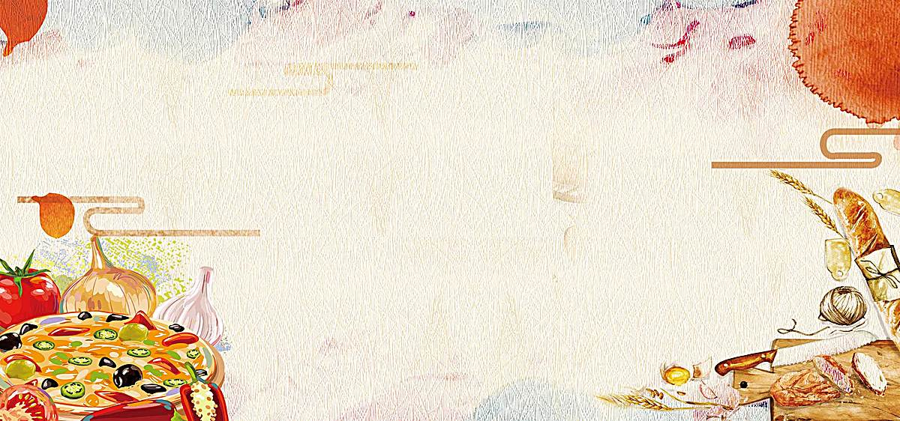
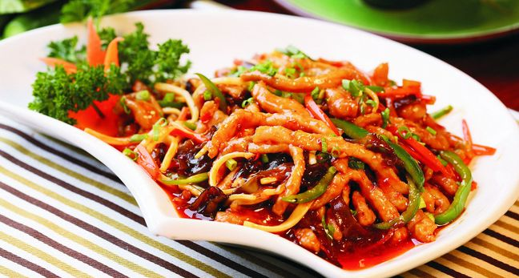
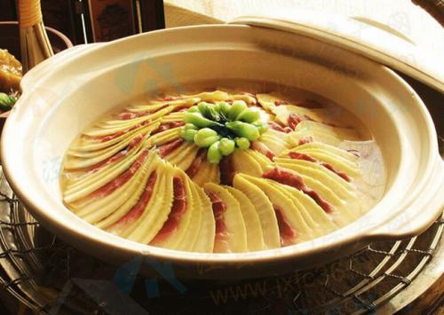
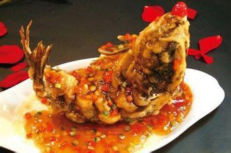
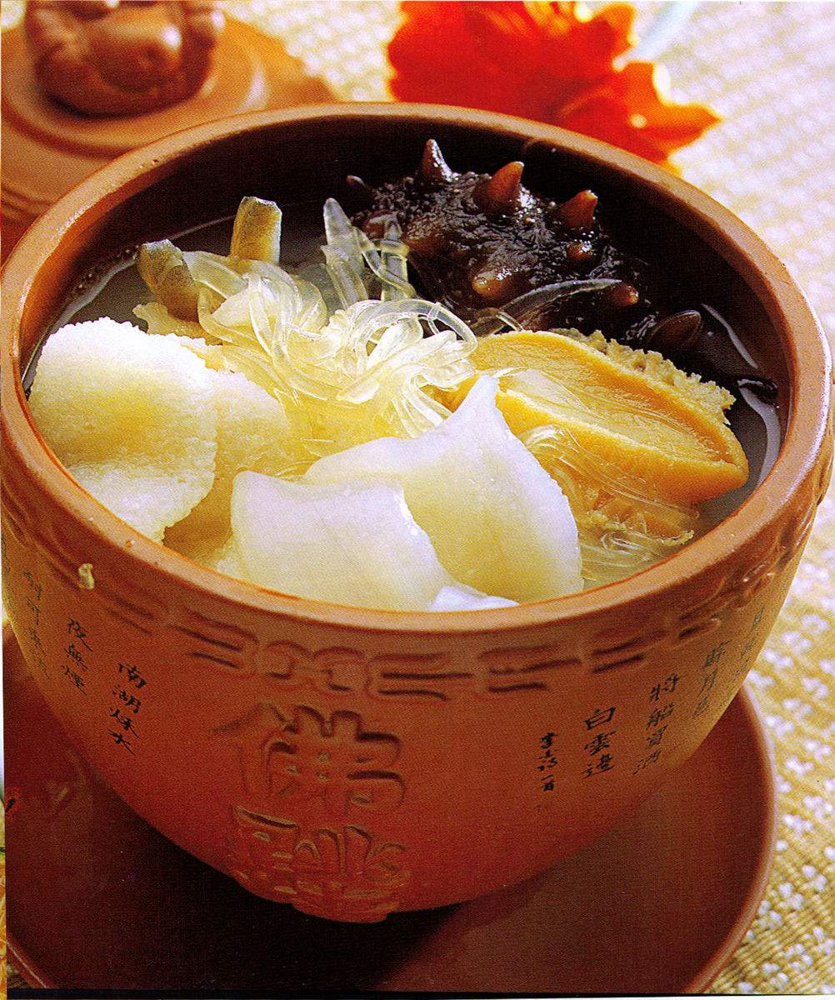
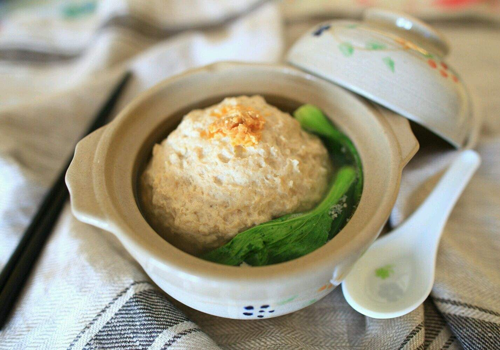
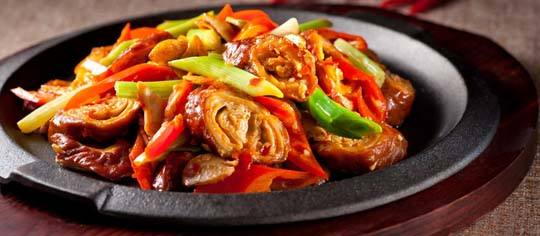
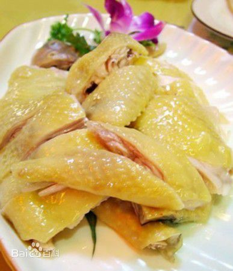
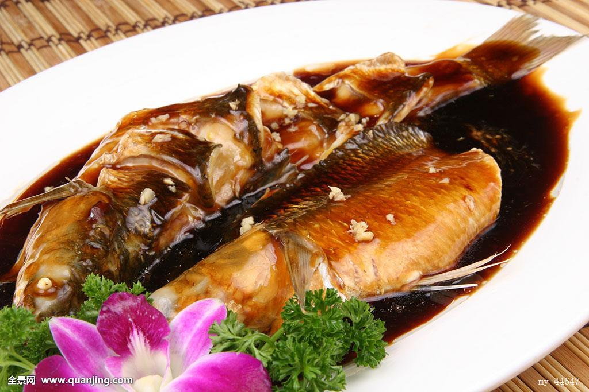

唯美食不可辜负也
       
菜系，又称"帮菜"，是指在选料、切配、烹饪等技艺方面，经长期演变而自成体系，具有鲜明的地方风味特色，并为社会所公认的中国饮食的菜肴流派。 中国饮食文化的菜系，是指在一定区域内，由于气候、地理、历史、物产及饮食风俗的不同，经过漫长历史演变而形成的一整套自成体系的烹饪技艺和风味，并被全 国各地所承认的地方菜肴。
早在春秋战国时期的中国，饮食文化中南北菜肴风味就表现出差异。到唐宋时，南食、北食各自形成体系。到了南宋时期，北甜南咸的格局形成。发展到清代初期时，鲁菜、川菜、粤菜、苏菜， 成为当时最有影响的地方菜，被称作"四大菜系"。到清末时，浙菜、闽菜、湘菜、徽菜四大新地方菜系分化形成，共同构成中国传统饮食的"八大菜系"。
除八大菜系外还有一些在中国较有影响的细分菜系，潮州菜，东北菜，本帮菜，赣菜，鄂菜，京菜，津菜，冀菜，豫菜，客家菜，清真菜等菜系。
中国传统餐饮文化历史悠久，菜肴在烹饪中有许多流派。川、鲁、粤、苏 四大菜系形成历史较早，后来，浙、闽、湘、徽等地方菜也逐渐出名，于是形成了中国的"八大菜系"，即鲁菜、川菜、粤菜、苏菜、闽菜、浙菜、湘菜、徽菜。
习俗原因：
当地的物产和风俗习惯，如中国北方多牛羊，常以牛羊肉做菜;中国南方多产水产、家禽，人们喜食鱼、肉;中国沿海多海鲜，则以海产品做菜。 折叠气候原因 各地气候差异形成不同口味，一般说来，中国北方寒冷，菜肴以浓厚，咸味为主;中国华东地区气候温和，菜肴则以甜味和咸味为主，西南地区多雨潮湿，菜肴多用麻辣浓味。 折叠烹饪方法 各地烹饪方法不同，形成了不同的菜肴特色。如山东菜[1] ，北京菜擅长爆、炒、烤、熘等;安徽、江苏的炖,蒸,烧等;四川菜擅长烤、煸炒等;广东菜擅长烤、焗、炒、炖、蒸等
烹饪历史：
折叠宋代：北甜南咸
早在宋代的时候，中国各地的饮食已经有了区别。《梦溪笔谈》卷二四中记录到:"大底南人嗜咸，北人嗜甘。鱼蟹加糖蜜，盖便于北俗也。"在当时，中国的口味主要有两种，北方人喜欢吃甜的，南方人喜欢吃咸的。当时中国没有吃"麻辣"的，因为，当时辣椒还没有传入中国。到了南宋的时候，北方人大量移民南方，因此，甜的口味逐渐传入南方。
折叠明代：京苏广三式
南宋时候，北方人大量南迁。逐渐地，北方的饮食文化影响了南方。在南方地区形成了自己的派系。到了明代末期，中国饮食分为京式、苏式和广式。京式偏咸，苏式、广式偏甜。
折叠清代：四大菜系
到了清代的时候，据杭州徐珂所辑《清稗类钞》中记载"肴馔之各有特色者，如京师、山东、四川、广东、福建、江宁，苏州、扬州、镇江、淮安。 一、清代中期的时候，川菜已经形成，到了清末就成为四大菜系之一了。 二、鲁菜也属于京式菜系，因为鲁菜影响力远远大于北京菜系，所以往往用鲁菜代表京式菜系。 三、粤菜大部分在广东。 四、苏式菜系绝大部分是在江苏地区。 于是就形成了京(鲁)、川、广(粤)、苏四大菜系
折叠民国：
民国开始，中国各地的文化有了相当大的发展。苏式菜系分为苏菜、浙菜和徽菜。广式菜系分为粤菜、闽菜，川式菜系分为川菜和湘菜。因为川、鲁、粤、苏四大菜系形成历史较早，后来，浙、闽、湘、徽等地方菜也逐渐出名，就形成了中国的"八大菜系"。后来形成最有影响和代表性的也为社会 所公认的有:川、粤、苏、闽、浙、湘、徽、鲁等菜系，即被人们常说的中国"八大菜系"。 一个菜系的形成和它的悠久历史与独到的烹饪特色分不开的。同时也受到这个地区的自然地理、气候条件、资源特产、饮食习惯等影响。有人把"八大菜系"用拟人化的手法描绘为: 鲁、如君临天下的北方帝王; 川、湘菜就像内涵丰富充实、才艺满身的名士; 粤、闽菜宛若风流儒雅的公子; 苏、浙和徽菜好比清秀素丽的江南美女。
返回